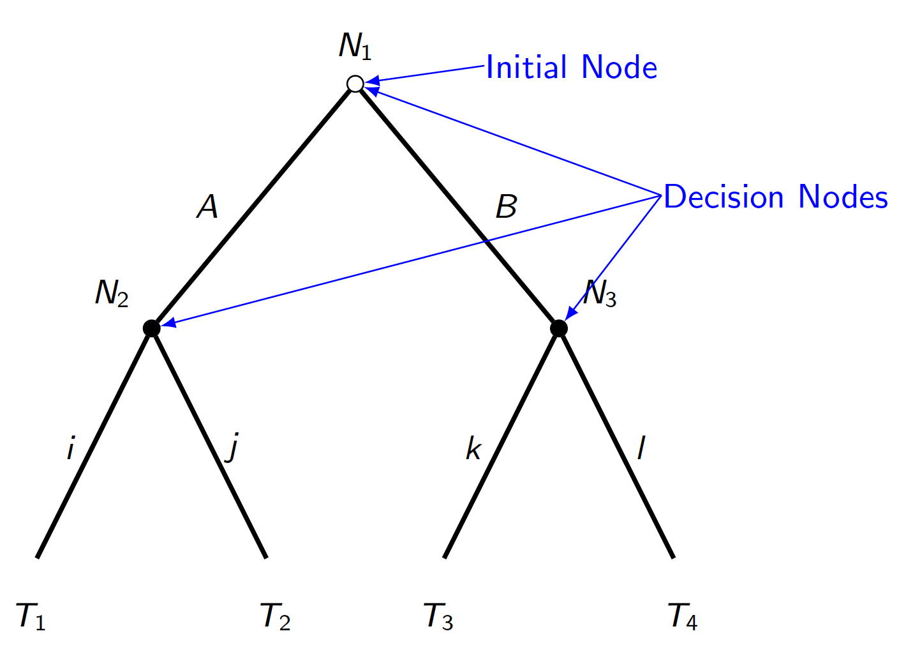

Extensive Form
Game Trees/Extensive Form as a tool
Before we learn how to solve a game, it will helpful to be able to visualize them
Because of the ordered nature of sequential games, a tree diagram makes sense
A Decision Tree

- Is this a strategic decision?
- No: if it’s only me
- Just because there are no other branches leading to the intiial node doesn’t mean there are no other decisions that lead us here. Just that we are not modeling them for the sake of this decision.
Extensive Form Definition
A Tree Graph consists of:
Multiple nodes with an ordered hierarchy starting from one initial node
Branches coming from each node which connect it to later nodes
The tree ends in any of the multiple terminal nodes
. . .
Each (non-initial) terminal node may have multiple branches leading from it; but must only have one branch that leads to it.
- This is because actions are different from strategies
- even if the actions are practically similar, it matters how we got there
Anatomy of a tree

- There are three nodes in this tree,
- one initial node at the top: this is where the game begins
- two other nodes follow after the choice at the initial node is decided
Anatomy of a tree

- In this case, each decision node has its own two branches
- It helps to label each branch with the name of the action it represents
Anatomy of a tree

- The game ends with four terminal nodes
- Unlike the nodes before, there is no decision to be made because the game is over
- By convention, they won’t be drawn as dots to differentiate them
Kidnapping Game 1
A kidnapper named Guy has contacted the victim’s wife, named Vivica, to demand a ransom.
To predict what will happen to the victim, Orlando, we need to create a game theoretic model of the situation.
Let’s use the language of the tree graph to visualize this game.
- Draw game on chalkboard step-by-step so students see how it’s constructed
- Explain order of each action for each node, starting w/ inital choice to kidnap or not
Kidnapping Game

Who are the players?
Where are the decisions?
What are the branches? What do they represent?
What do the terminal nodes represent?
Is this a complete representation of a game? What’s missing?
- Guy and Vivica are players because they have decisions which influence the outcome
- Orlando is not a player
- decisions are at each of the 4 nodes
- Each action is a decision
- A complete game needs preferences of the players!
- Note that even though Guy has two branches each for Kill and Release, they show up in different parts of the tree.
- Prior decisions matter!
Kidnapping Game payoffs
| Outcome | Guy |
|---|---|
| No kidnapping | 3 |
| Kidnapping, ransom paid, Orlando killed | 4 |
| Kidnapping, ransom paid, Orlando released | 5 |
| Kidnapping, no ransom paid, Orlando killed | 2 |
| Kidnapping, no ransom paid, Orlando released | 1 |
- Guy’s preferences:
- Best case: Gets ransom money and he doesn’t have to kill Orlando
- Next best: Gets money but he has to kill Orlando :(
- Middle: No kidnapping, status quo, everyone goes about their lives
- Next worst: Kidnaps Orlando, gets no ransom, but at least gets to play tough for next kidnapping victim
- Worst case: Kidnaps Orlando but gets no ransom, and has to release Orlando
Kidnapping Game payoffs
| Outcome | Guy | Vivica |
|---|---|---|
| No kidnapping | 3 | 5 |
| Kidnapping, ransom paid, Orlando killed | 4 | 1 |
| Kidnapping, ransom paid, Orlando released | 5 | 3 |
| Kidnapping, no ransom paid, Orlando killed | 2 | 2 |
| Kidnapping, no ransom paid, Orlando released | 1 | 4 |
- Vivica’s preferences
- Best case: She and Orlando get to go about their lives without experiencing kidnapping
- Next best: Orlando is kidnapped, but is released without needing to pay
- Middle: Orlando is kidnapped, but is released after ransom is paid
- Next worst: Orlando is killed, but no ransom paid
- Worst: Orlando is killed and loses money
Kidnapping game tree with payoffs

We added the correct payoffs to the terminal node corresponding to each outcome from the table
Note how the convention is that the first player to move has their payoffs listed first
Predictions?
Based on the extensive form game tree with payoffs,
- Do you have any predictions for what strategies each player will choose?
- Ask students what they would do in Guy’s position,
- in Vivica’s?
- Should they think about what the other player is thinking?
- Would they have different preference orederings of the outcomes?
a Definition of an Extensive Form Game: 2
A collection of decision-makers, called players or agents
A set of decision nodes, each represents the information available to the player of that node
Strategies for each player which list the branches from each node that represetn the actions a player would take if faced with that choice
A tree diagram which maps the intersections of players’ strategy profiles to the outcomes represented at each terminal nodes
- connect this definition to the more general defition of a game from lecture 1
- players are a part of every game
- decision nodes are a specific representation of information sets
- strategies will be defined by paths players take along the branches
- preferences are represented by the payoffs at terminal nodes
Strategies in Extensive Form Games
A strategy is a complete plan of action which assigns an action at every node where a player makes a decision
Be careful to distinguish between a strategy and a single action/choice
What’s the difference?
- The difference between a complete strategy and a single action is that a strategy contains a list of multiple actions and the conditions for when that action will be taken
Apply this definition to the kidnapping game:

- How many decisions does Guy make?
- 3
- How many decisions does Vivica make?
- 1
- count the nodes labeled with each player’s name
Apply this definition to the kidnapping game:

- Write out a complete strategy for Vivica
- Only two strategies:
- Pay the ransom,
- or Don’t pay
- Only two strategies:
- Vivica only has to make a decision in the branch where Orlando is kidnapped
Apply this definition to the kidnapping game:

- Write out at complete strategy for Guy
- Let’s give some shorter names for Guy’s actions:
- \(A\) \(\equiv\) Kidnap Orlando (Abduct)
- \(I\) \(\equiv\) Don’t kidnap Orlando (Ignore)
- \(K\) \(\equiv\) Kill Orlando
- \(L\) \(\equiv\) Let Orlando live
- Let’s give some shorter names for Guy’s actions:
- But Guy’s choices depend on what Vivica chooses, so his strategy is more complicated
Apply this definition to the kidnapping game:
Guy has \(8\) total complete strategies:
| If Guy \(A\)bducts | If Guy \(I\)gnores |
|---|---|
| ( \(A\), \(K\), \(K\) ) | ( \(I\), \(K\), \(K\) ) |
| ( \(A\), \(L\), \(K\) ) | ( \(I\), \(L\), \(L\) ) |
| ( \(A\), \(K\), \(L\) ) | ( \(I\), \(K\), \(L\) ) |
| ( \(A\), \(L\), \(L\) ) | ( \(I\), \(L\), \(L\) ) |